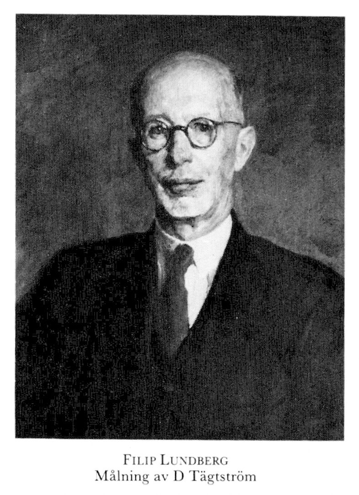

5 Modelo Clásico de Cramér-Lundberg
5.1 Introducción
El modelo clásico de Cramér-Lundberg, también conocido como modelo de riesgo clásico o modelo de ruina teórica, fue descrito por Filip Lundberg en 1903 y enriquecido con los aportes de Harald Cramér en 1930. Este modelo describe el superávit de una aseguradora que recibe ingresos por primas y, a su vez, paga los montos de las reclamaciones o siniestros que ocurren.

En términos más técnicos, el modelo de Cramér-Lundberg se utiliza para estudiar la probabilidad de ruina de una compañía de seguros. Aquí están algunos conceptos clave:
Proceso de Riesgo Clásico: El capital de la compañía se modela como un proceso de riesgo, donde las primas ingresan y las reclamaciones salen. La probabilidad de ruina se refiere al riesgo de que la compañía no pueda cumplir con sus obligaciones debido a insuficiencia de capital.
Distribuciones de Reclamaciones: Se supone que las distribuciones del tamaño de los reclamos son de cola ligera, lo que significa que las reclamaciones extremadamente grandes son poco probables pero pueden tener un impacto significativo en la solvencia de la compañía.
Fórmulas Exactas y Aproximadas: Se han desarrollado métodos para obtener fórmulas exactas y aproximadas para la probabilidad de ruina en este modelo. Estas fórmulas permiten estimar la posibilidad de que la compañía quiebre debido a pérdidas inesperadas.
Simulaciones y Estimaciones: Además de las fórmulas, se realizan simulaciones de las trayectorias del proceso de riesgo para diferentes niveles de capital inicial. Esto proporciona una perspectiva más completa de las características operativas de la aseguradora .
En resumen, el modelo de Cramér-Lundberg es una herramienta valiosa para evaluar el riesgo financiero en el ámbito de las compañías de seguros y comprender las posibilidades de ruina en función de las fluctuaciones en el capital disponible.
5.2 Descripción del modelo
El modelo de Cramér Lundberg se define enseguida como un cierto tipo de proceso estocástico a tiempo discreto.
Se modela el numero de reclamaciones como un proceso de Poisson \((N(t))\) con parámetro \(\lambda t\) donde \(t\geq 0\), las pérdidas individuales \(X_i\) son variables aleatorias independientes e idénticamente distribuidas (iii)
Definición 5.1
El proceso estocástico a tiempo discreto del monto de reclamaciones se define como \(\{(X_k): {k \in \mathbb{N} }\}\), donde las \(X_k\) para \(k = 1, 2, ...,\) son variables aleatorias (Definición 2.7) no negativas, independientes e idénticamente distribuidas y tienen función de distribución común \(F\), media finita denotada por \(E[X_k] = \mu\) y varianza \(Var(X_k) = \sigma^2 \leq \infty\).
Los tiempos de reclamación ocurren en instantes aleatorios de tiempo denotados por \(T_i\) tales que \[ 0 < T_1 < T_2 < \dotsb\]
El proceso de ocurrencia de las reclamaciones es el número de reclamaciones contingentes en el intervalo \([0,t]\), y se define como sigue:
\[N(t) = \sup \{n \geq 1: T_n \leq t \leq 0\}\] y por convención se usará \(\sup \ \emptyset = 0\).
Los tiempos entre llegadas son los tiempos que transcurren entre dos reclamaciones sucesivas, los cuales se denotan por \[Y_i = T_i \ \ \ Y_k= T_k - T_{k-1}, \ \ \ k = 2,3, \dotsb,\]donde las variables aleatorias \(Y_k\) son i.i.d. con distribución exponencial y media finita \(E[Y_1] =\frac{1}{\lambda}\).
La sucesión \(\{(X_k): k \in \mathbb{N}\}\) es independiente de la sucesión \(\{(Y_k):k\in \mathbb{N}\}.\)
Definición 5.2 El proceso de agregado de siniestros \((S(t))_{t \geq 0}\) de un portafolio se define como: \[S(t):= \left\{ \begin{array}{lcc} \sum_{i=1}^{N(t)} X_i, & si & N(t) > 0, \\ \\ 0, & si & N(t) = 0. \end{array} \right. \tag{5.1}\] El proceso \((S(t))_{t\geq0}\) es un proceso de suma parcial aleatoria, que se obtiene al sustituir el índice determinado \(n\) en la suma \(S_n = X_1 + \dotsb + X_n\) por la variable aleatoria \(N(t):\) \[S(t) = X_1 + \dotsb+ X_{N(t)} = S_{N(t)}, \ \ t\geq0,\]que se le conoce como proceso compuesto. Nótese que cuando \(Var(X_k) = \sigma^2 < \infty\), el proceso del agregado de siniestros \((S(t))t\ge0\) comparte varias propiedades con el proceso de una suma parcial, como las propiedades asintóticas del teorema del límite central y la ley fuerte de los grandes números.
Lema 5.1 El agregado de siniestros \((S(t))\) con \(t \geq 0\) tiene función de distribución \[G_s(x) = P[S(t) \leq x] = \sum_{n=0}^{\infty} e^{-\lambda t}\frac{(\lambda t)^n}{n!}F**(x) \ \ \ t\leq 0, x \leq 0, \tag{5.2}\] donde \(F^{n*}(x)= P[\sum_{i=q}^{n} X_i \leq x]\) es la n-ésima convolución de F.
Prueba. By induction.
Lema 5.2 Para cada \(r \geq 0\), el proceso del agregado de siniestros \((S(t))_{t \geq 0}\) tiene función generadora de momentos \[M_{S(t)}(r) = E[e^{rS(t))}] = M_{N(t)}(ln M_{x_i}(r)). \tag{5.3}\]
Prueba. By induction.
El proceso de riesgo \(((U(t))_{t \geq 0}\) se define como sigue: \[U(t) = u + ct - S(t) \ \ \ t\geq 0, \tag{5.4}\] en donde \(u \geq 0\) denota el capital inicial, ct el ingreso vía prima durante el periodo \([0,t]\) a una tasa constante \(c > 0\) y \(S(t)\) es el agregado de siniestros en el momento t.
Proposición 5.1 Para cada \(r\geq0\), el proceso de riesgo \((U(t))_{t\geq0}\) tiene función generadora de momentos \[M_{U(t)}(r) =e^{r(u + ct)} M_{S(t)}(-r). \tag{5.5}\]
Lema 5.3 sea \((U(t))_{t\geq0}\) un proceso de riesgo, entonces para el modelo de renovación se tiene que: \[E[U(t)] = u + ct - \mu E[N(t)], \tag{5.6}\] y para el modelo clásico de Crámer-Lundberg es: \[E[U(t)] = u + ct - \lambda \mu t. \tag{5.7}\]
Prueba. By induction.
Lema 5.4 Sea \((U(t))_{t\geq0}\)un proceso de riesgo, entonces para el modelo de renovación se tiene que : \[ Var(U(t)) = \mu^2 Var(N(t)) + \sigma^2 E[N(t)],\] y para el modelo clásico Cramér-Lundberg es: \[Var(U(t)) = \lambda t(\sigma^2 + \mu^2).\]
Prueba. By induction.